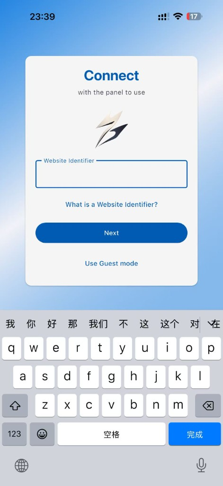
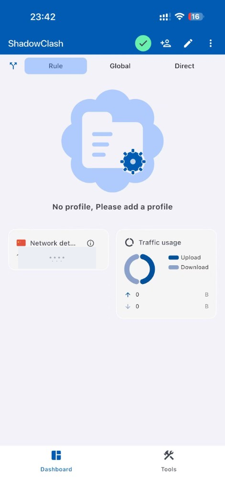
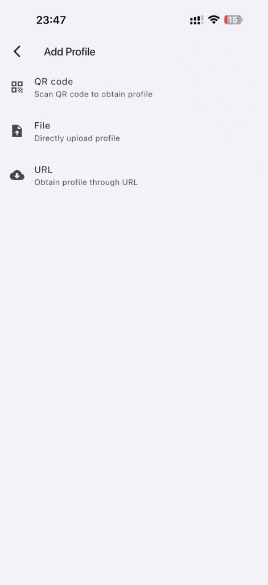
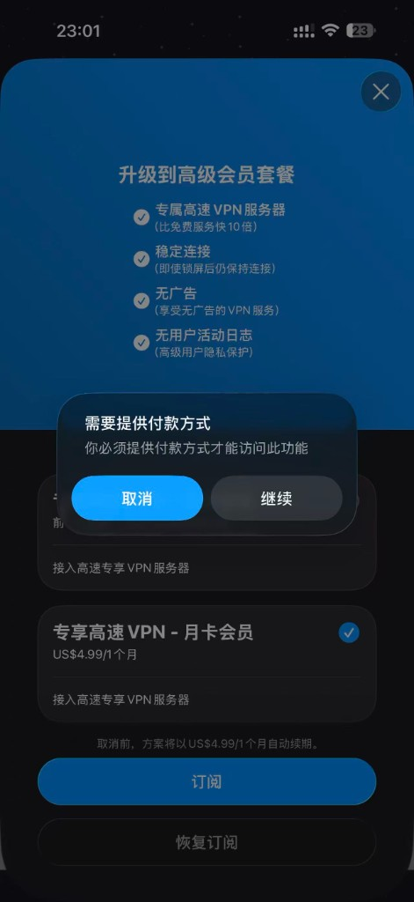
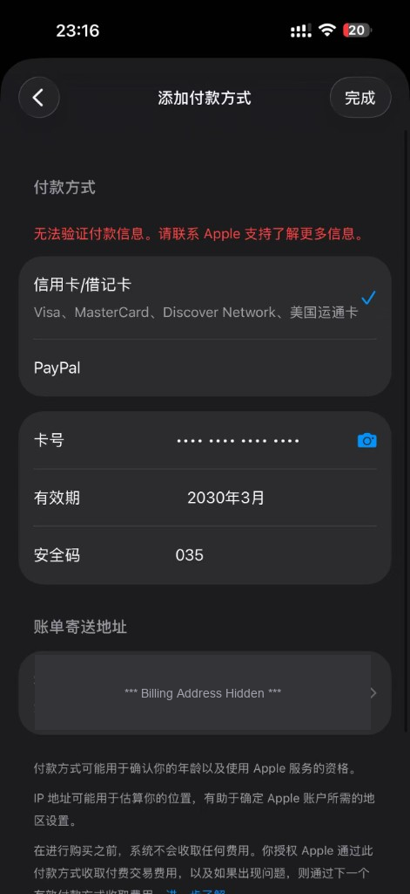

手机 Clash 翻墙教程 — Android & iOS
在 Android 与 iOS 手机上使用 Clash 实现科学上网
👇 你用什么手机？点击对应卡片直达本系统的教程目录
Android
🤖 Android 教程导航
Android 端使用 Clash Meta for Android（开源、免费）。下面是本系统的全部章节，点击直达。
👉 用 iPhone / iPad？直接跳到 iOS 目录
Clash Meta for Android 介绍
Clash Meta for Android（简称 CMA）是一款基于 Clash Meta 内核的 Android 代理客户端。它完全开源，代码透明可审计，支持订阅管理、规则分流、TUN 模式、分应用代理等功能。
为什么选择 Clash Meta for Android？
- 开源免费：基于 MIT 协议，代码托管于 GitHub
- 功能完善：支持订阅、规则、TUN、分应用代理等
- 持续维护：社区活跃，定期更新
- 兼容性强：支持 Clash、Clash Meta 等主流订阅格式
官方发布页：GitHub Releases。建议从官方 GitHub 或 F-Droid 下载，确保安全可靠。
下载安装
1. 从 GitHub 下载 APK
- 在手机浏览器中打开：ClashMetaForAndroid Releases
- 找到最新版本，展开 Assets
- 根据设备架构选择：
arm64-v8a（绝大多数 64 位手机）、armeabi-v7a（32 位）、x86_64（模拟器） - 点击对应的
.apk文件下载
2. 允许安装未知来源
若系统提示「无法安装未知来源的应用」，请进入 设置 → 应用 → 特殊应用权限 → 安装未知应用，选择您用于下载的浏览器，允许该应用安装未知应用。
3. 安装 APK
打开文件管理器，找到下载的 APK 文件，点击安装即可。Clash Meta for Android 未在 Google Play 上架，需从 GitHub 或 F-Droid 获取。
导入订阅
步骤：
- 打开 Clash Meta for Android
- 点击底部 Profile（配置）标签
- 点击右上角 + 按钮
- 选择 URL 方式
- 在 URL 输入框中粘贴您的订阅链接
- Profile Name 可自定义（如「我的订阅」）
- 点击 Save 或「确定」
添加后应用会自动拉取订阅内容。若需手动更新，在 Profile 列表中长按该配置 → 选择 Update，或点击配置右侧的刷新图标。
启动连接
1. 选择配置
在 Profile 中确保已选中您要使用的订阅配置（通常显示为蓝色勾选）。
2. 启动代理
- 返回应用主界面
- 点击中央的 大按钮 或 开关 启动代理
- 首次启动时系统会弹出 VPN 权限请求，点击「确定」或「允许」授予权限
- 连接成功后，按钮会变为「已连接」状态，通知栏会显示 VPN 图标
再次点击大按钮或开关即可断开代理。
代理模式
Clash Meta for Android 支持多种代理模式：
| 模式 | 说明 |
|---|---|
| Rule（规则） | 按规则分流：国内直连，国外走代理。推荐日常使用 |
| Global（全局） | 所有流量走代理 |
| Direct（直连） | 所有流量直连，不走代理 |
在主界面或 Proxies 标签中找到顶部的模式选择器，点击即可切换。
分应用代理
分应用代理可指定哪些应用走代理、哪些直连，节省流量并提升体验。
设置步骤：
- 打开 Settings（设置）
- 进入 Network → Per-App Proxy（分应用代理）
- 开启该功能
模式说明：
- Bypass（绕过）：只对列表中的应用走代理，其余直连。适用于仅需代理少数应用（如浏览器、Twitter、YouTube）
- Proxy（代理）：只对列表中的应用直连，其余走代理。适用于大部分应用走代理，少数应用（如银行、支付）直连
在分应用代理设置中点击「添加应用」或「+」，从应用列表中选择要加入的应用即可。
节点选择与测速
1. 进入 Proxy 标签
点击底部 Proxies（代理）标签，可看到订阅中的节点列表和策略组。
2. 选择节点
若订阅包含「自动选择」「节点选择」等策略组，点击进入；在节点列表中点击任意节点即可切换。
3. 测速
- 在节点列表或策略组中，点击 测速 或 延迟测试 按钮
- 应用会逐个测试节点延迟（ping）
- 测速完成后可按延迟排序，选择延迟最低的节点
测速后节点通常会自动按延迟从低到高排序，可手动选择延迟低、稳定性好的节点使用。
常见问题
1. 电池优化导致后台被杀 — 进入 设置 → 应用 → Clash Meta for Android → 电池，选择「无限制」或「不限制后台」；部分厂商需在「自启动管理」中允许应用自启动。
2. VPN 权限被拒绝 — 确保在系统弹窗中点击「确定」授予 VPN 权限；若已拒绝，可到 设置 → 应用 → 权限 中检查。
3. 订阅导入失败 — 检查订阅链接是否可访问；确认网络正常；部分订阅可能需在特定网络环境下才能获取。
4. 与其他 VPN 冲突 — 同时开启多个 VPN 可能冲突，请关闭其他 VPN 或代理应用后再使用 Clash Meta for Android。
iOS
🍎 iPhone / iPad 教程导航
iOS 端推荐免费的 ShadowClash（外区 Apple ID 即可下载，0 元上手）。下面是本系统的全部章节，点击直达。
- 01. iOS 工具概述（4 款对比）
- 02. 获取外区 Apple ID
- 03. ShadowClash 教程（推荐）
- 04. Shadowrocket 使用
- 05. Stash 使用
- 06. ⚠️ 避开「一键 VPN」陷阱
- 07. 按需连接
- 08. 最低成本一条龙路径
- 09. 常见问题
👉 用 Android？直接跳到 Android 目录 · 🚀 想最快上手？直接看 第 08 节一条龙路径
iOS 工具概述
iOS 上的 Clash 类代理工具均需从非中国大陆 App Store 下载，下面四款是 2026 年最常用的选择。三款付费 App 都是 一次性买断（不是订阅制），下载后永久所有：
| 应用 | 价格 | 内核 | 特点 |
|---|---|---|---|
| ShadowClash | 免费 | Clash | 开发者 FUZZYPN（香港），App Store 隐私白皮书明示不收集任何数据；Guest mode 直接 URL 导入订阅；无广告、无强制订阅。新手 / 零成本入门首选 |
| Shadowrocket | $2.99 | 自研 + Clash 兼容 | 支持协议最多，社区教程最丰富，进阶 / 老用户首选 |
| Stash | $3.99 | Clash | 规则分流配置最贴近 clash-meta 桌面行为 |
| Quantumult X | $7.99 | 自研 | 重写 / 复写规则等高级特性多，折腾型进阶 |
重要说明：所有上述应用均需从外区（如美区、港区）Apple ID 下载。中国区 App Store 不提供这些应用，需注册或使用外区 Apple ID。ShadowClash 完全免费下载即可，其他三款下载时一次性扣款。
获取外区 Apple ID
方法一：在网页上注册（推荐）
- 在电脑浏览器中访问：appleid.apple.com/account/create
- 填写个人信息：姓名、国家/地区选择 美国 或 香港（推荐美区）、出生日期、邮箱、密码
- 验证邮箱：输入 Apple 发送的验证码
- 支付方式：美国区可选择「无」或添加信用卡；若选择「无」，部分付费应用需通过 礼品卡 充值后购买
- 完成注册
方法二：使用礼品卡
若无法绑定信用卡，可购买对应地区的 Apple 礼品卡（美区礼品卡可在亚马逊、淘宝等渠道购买，注意选择正规渠道），充值后用于购买应用。
注意：国家/地区一旦选定更改较麻烦，建议选择美区或港区；建议单独注册外区 Apple ID，而非修改现有中国区账号。
ShadowClash 使用教程（免费方案）
ShadowClash 是 iOS 上完全免费的 Clash 兼容客户端，对新手最友好，也是本教程推荐的首选方案。
1. 信任背书与基本信息
| 项目 | 信息 |
|---|---|
| App Store ID | 6760091330 |
| 开发者 | FUZZYPN COMPANY LIMITED（香港公司） |
| 隐私政策 | fuzzypn.com/privacy.html |
| 价格 / 内购 | 完全免费、无广告、无内购、无强制订阅 |
| 数据收集 | App Store 隐私白皮书明示「开发者不会从此 App 收集任何数据」（Apple 强制公示） |
| 支持平台 | iOS / iPadOS 13.0+、Apple Vision、Apple Silicon Mac |
| 更新频率 | 持续维护（截至撰写时最新版本 1.3，2026-04-12） |
ℹ️ ShadowClash 本身是闭源软件，建议：机场订阅链接含账号信息，请妥善保管，不要分享给他人。
2. 下载安装
- 切换到外区（推荐美区）Apple ID，方法见上一节
- 在 App Store 搜索 ShadowClash，点击「获取」直接下载（不需要付款）
- 下载完成后，App 出现在主屏幕，App Store 直链：apps.apple.com/us/app/shadowclash/id6760091330
3. 首次启动：选 Guest mode
打开 App 会看到 Connect with the panel to use 输入框，要求填 Website Identifier：

- Website Identifier 是机场官方面板的「站点标识符」，填了就需要登录机场账号同步订阅
- 新手最简方式：直接点击下方的 Use Guest mode（访客模式），跳过这一步，用订阅 URL 手动导入
4. 导入订阅（蓝胖云为例）
进入 Guest mode 后，主界面会提示 No profile, Please add a profile：

- 点击右上角的 +人形 或 铅笔 图标进入 Add Profile 页面
- 三种导入方式任选其一（推荐 URL）：

| 方式 | 适用场景 |
|---|---|
| QR code | 机场后台直接生成订阅二维码时使用 |
| File | 手头已有 .yaml 配置文件 |
| URL（推荐） | 粘贴蓝胖云 / 扬帆云等机场后台「我的订阅」复制的订阅链接 |
选 URL → 粘贴订阅链接 → 给 Profile 起个名字（如 lanpang）→ 完成。回到主界面会看到 Profile 已加载。
💡 蓝胖云 New_2026 系列入门档月付 ¥10/月（168GB / 3 设备同时在线）就够 iPhone + 备用机用了，详见 订阅申请指南 · 蓝胖云。
5. 三种模式
| 模式 | 行为 | 推荐场景 |
|---|---|---|
| Rule（默认） | 按订阅自带规则分流：国内直连、国外走代理 | 日常使用 |
| Global | 所有流量走代理 | 临时调试、强制走代理时 |
| Direct | 所有流量直连 | 暂时关代理但不退出 App |
第一次连接时 iOS 会弹「添加 VPN 配置」，点 允许 + 输入设备密码即可。状态栏出现 VPN 图标即代表成功。
6. 选节点与延迟测试
主界面下方的 Tools 标签 → 进入策略组（Proxy group），可看到机场提供的所有节点；每个策略组支持 逐组延迟测试，点一下就会自动 ping 出每个节点的当前延迟。
7. ShadowClash 优劣总结
| 优点 ✅ | 局限 ⚠️ |
|---|---|
| 完全免费、无广告、无内购弹窗 | 闭源，不能审计代码 |
| App Store 隐私白皮书明示不收集数据 | 高级配置（如复杂规则改写）不如 Stash 灵活 |
| Guest mode 极简，新手 30 秒上手 | 评分样本较少（中国区 12 评，香港区不足显示） |
| 多区上架 + 持续更新 | 仅英文界面 |
Shadowrocket 使用
适合愿意一次性付 $2.99 换更全协议支持和更成熟社区教程的用户。
1. 添加订阅
- 打开 Shadowrocket
- 点击底部 配置 或 设置
- 点击右上角 + 或「添加」
- 选择 URL 或「订阅」
- 粘贴您的订阅链接
- 点击「确定」或「保存」
2. 连接代理
在主界面点击顶部的连接开关或大按钮；首次连接时系统会弹出「添加 VPN 配置」提示，点击「允许」并输入设备密码（若需要）；连接成功后状态栏会显示 VPN 图标。
3. 选择节点
在配置标签中确保已选中您的订阅；点击底部「首页」或「代理」标签；在节点列表或策略组中选择要使用的节点，点击即可切换。
Stash 使用
Stash 基于 Clash 内核，与 Clash 桌面端配置兼容性最好，适合 Clash 桌面老用户。
添加配置：打开 Stash → 点击底部「配置」→ 点击「从 URL 下载」→ 粘贴订阅链接 → 点击「下载」或「确定」。
选择策略组：Stash 支持策略组（如「自动选择」「节点选择」），在「代理」或「首页」中选择要使用的策略组和节点。
连接：点击主界面的连接按钮，授予 VPN 权限，连接成功后即可使用。
若订阅返回的是 Clash 格式，ShadowClash / Shadowrocket / Stash 三者均可使用同一订阅链接，互不冲突，可同时安装择优使用。
⚠️ 避开「一键 VPN」App 的付款陷阱
App Store 里有大量包装成「一键连接、无限速度」的 VPN App，它们不是 Clash 客户端，而是商业 VPN 服务：你下载后无法导入自己的机场订阅，必须订阅它们自己卖的服务。这类 App 在中国用户场景下基本都是坑，下面是一个真实案例。
典型套路 1：进入 App 立刻弹付费窗口
打开 App 后会立刻弹出「升级到高级会员套餐」+「需要提供付款方式」遮罩，不付费连主功能都进不去：

- 套餐通常是 US$4.99 / 月自动续期，本质是订阅制不是一次性买断
- 即使点「取消」也只是关掉这个 modal，主界面什么都用不了
- "高级 VPN 服务器、无广告、无日志" 这种描述，完全无法验证（闭源 + 商业 VPN）
典型套路 2：必须绑定真实信用卡
点「继续」就会跳到 Apple 的「添加付款方式」页：

- 淘宝 / 闲鱼 / 第三方平台买的虚拟信用卡基本通不过 Apple 的验证（红字「无法验证付款信息。请联系 Apple 支持了解更多信息。」就是这个意思）
- 如果绑定自己真实的信用卡：
- 隐私风险：你的姓名、卡号、账单地址都会绑到这个外区 Apple ID 上
- 扣费风险：订阅一旦开通，下个月会自动续费，忘记取消就持续扣款
- 退款麻烦：跨区 Apple ID 想退款流程繁琐
- 美区礼品卡余额理论上可以用来订阅，但小额礼品卡不够覆盖年付，且自动续费一旦余额清零就会失败
我们的建议
| ❌ 不推荐 | ✅ 推荐 |
|---|---|
| 「一键 VPN」类 App + 自动续费订阅 + 强制绑卡 | Clash 客户端（ShadowClash / Shadowrocket / Stash）+ 机场订阅 |
| 客户端和服务捆绑，节点黑盒 | 客户端开放、节点透明，订阅可换可比价 |
| 闭源服务，隐私无法审计 | 客户端独立 + 机场服务商分离，风险可控 |
| 价格 $4.99/月 起，绑卡才能用 | 蓝胖云月付 ¥10 起，无需绑任何卡 |
📌 结论：在 iOS 上，正确路径永远是「外区 Apple ID 下载 Clash 客户端 → 机场订阅 URL 导入」，绝不需要在 App 内付费 / 绑信用卡。任何要求你在 App 内绑卡的「VPN」App 直接卸载即可。
按需连接
按需连接：在特定 Wi-Fi 下自动连接代理，适用于在家或公司 Wi-Fi 自动开代理的场景。
设置步骤（ShadowClash / Shadowrocket 同理）：
- 打开 设置 → 按需连接 或 On Demand
- 添加 Wi-Fi 网络：选择「仅在以下 Wi-Fi 下连接」
- 输入 Wi-Fi 名称（SSID）
- 保存后，连接该 Wi-Fi 时会自动开启代理
若路由器已部署 Clash，可设置「在家 Wi-Fi 不自动连接」；出门使用移动网络或公共 Wi-Fi 时，可手动连接或设置按需连接。
最低成本 iOS 翻墙路径总结
如果你只想用最低的钱、最少的步骤把 iPhone 配通，按下面顺序操作即可。这是一条已经被验证可用的完整路径。
| 步骤 | 操作 | 一次性成本 | 持续成本 |
|---|---|---|---|
| 1 | 在「账号星球」购买美国 Apple ID（无需任何付款方式） | 约 ¥22.8 起 | — |
| 2 | iPhone 切到该外区 Apple ID（设置 → App Store → 退出 → 用美区 ID 重新登录） | 0 | — |
| 3 | App Store 搜索 ShadowClash 下载（完全免费，不要付费、不要绑卡） | 0 | — |
| 4 | 在「蓝胖云」注册并购买入门档 New_2026 套餐（168GB / 3 设备同时在线） | — | ¥10 / 月（年付可降到 ¥120/年） |
| 5 | 蓝胖云后台「我的订阅」复制订阅 URL → ShadowClash → Guest mode → Add Profile → URL → 粘贴 | 0 | — |
| 6 | 主界面切换到 Rule 模式 → 点连接 → 允许 VPN 配置 → 完成 | 0 | — |
首月总成本：¥22.8（ID）+ ¥10（订阅）≈ ¥33；之后每月仅 ¥10 订阅费，年付摊下来 ¥10/月以下。
必看提示
- ✅ 整条路径不需要任何信用卡（包括美国 Apple ID 和 ShadowClash 都不要求绑卡）
- ✅ ShadowClash 完全免费：在 App 内看到任何「升级到高级会员」弹窗都直接关掉，不影响功能
- ✅ Apple ID 与机场账号是两套独立账号：Apple ID 只用来下载 App，节点服务来自机场订阅
- ⚠️ 妥善保管 Apple ID 密码 + 蓝胖云订阅链接（订阅链接含账号信息，不要分享他人）
- ⚠️ 若需要在 iPhone 与 iPad / Mac 上同时使用，注意机场套餐的「设备同时在线数」上限
相关链接
- 美国 Apple ID 购买：账号星球（支持支付宝）
- 蓝胖云套餐对比：订阅申请指南 · 蓝胖云
- ShadowClash App Store：apps.apple.com/us/app/shadowclash/id6760091330
常见问题
1. 中国区 App Store 找不到应用 — Shadowrocket / Stash 等未在中国区上架（ShadowClash 当前可见，但部分时段可能下架），建议使用外区（美区、港区）Apple ID 登录 App Store 后下载。
2. 切换 Apple ID 区域需谨慎 — 切换区域需清空余额、取消订阅等；若账号有未到期订阅可能无法切换；建议单独注册外区 Apple ID，而非修改现有账号。
3. 订阅格式兼容性 — ShadowClash / Stash 主要支持 Clash 格式（YAML）；Shadowrocket 还支持 SS、SSR、V2Ray 等更多格式。主流机场（蓝胖云、扬帆云等）默认提供 Clash 订阅，三个客户端都能直接用。
4. 连接后无法上网 — 检查订阅是否已正确加载并包含有效节点；尝试切换节点或规则模式；确认规则是否正确；重启应用或设备后重试。
5. ShadowClash 弹「升级到高级会员」该不该买？ — ShadowClash 本身完全免费，所有核心功能都不需要付费，弹窗里的「高级会员」是开发者的可选支持项，不买不影响任何功能，直接关闭即可。如果遇到必须付费才能进入主界面的 App，那不是 ShadowClash 而是另一种「一键 VPN」App，参考 第六节避坑指南 直接卸载。